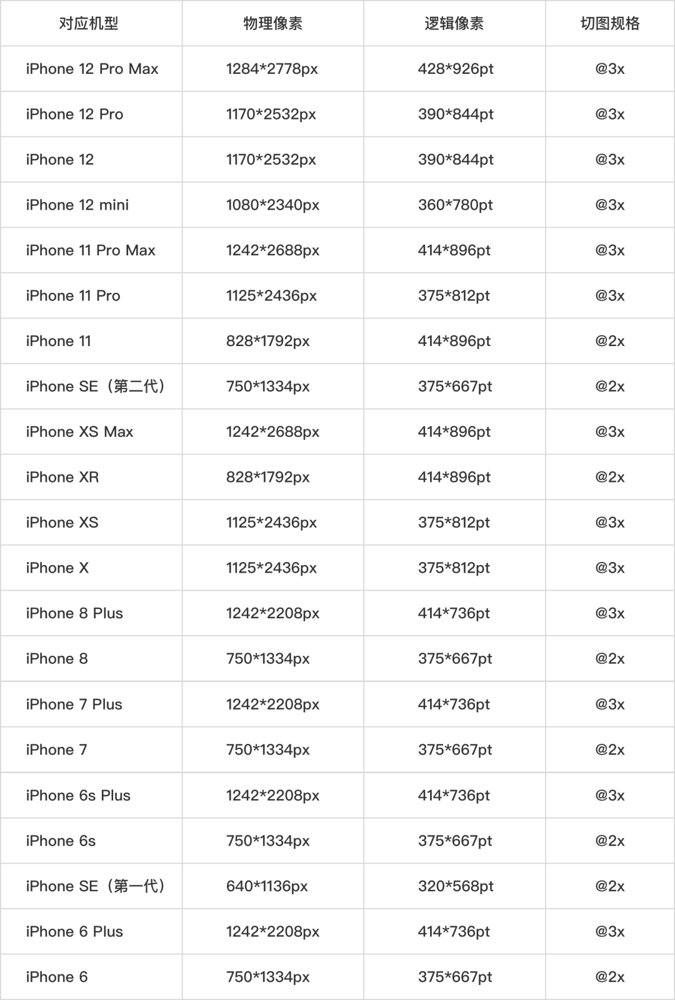

一、基本尺寸
1、控件尺寸
- iPhone、iPad：StatusBar的高度为20，NavBar的高度为44，TabBar的高度为49；
- iPhone X：StatusBar的高度为44，NavBar的高度为44，TabBar的高度为83；
2、屏幕尺寸
设备 逻辑像素pt 倍率 屏幕尺寸 最高系统 iPhone 4s（11） 320x480 2X 3.5inch iOS 9 iPhone 5s（13） 320x568 2X 4inch iOS 12 2016（iOS 10、Xcode 8） iPhone SE（春季） 320x568 2X 4inch -- 2017（iOS 11、Xcode 9） iPhone 8 375x667 2X 4.7inch -- iPhone 8 Plus 414x736 3X 5.5inch -- iPhone X 375x812 3X 5.8inch -- 2018（iOS 12、Xcode 10） iPhone XS 375x812 3X 5.8inch -- iPhone XR 414x896 2X 6.1inch -- iPhone XS Max 414x896 3X 6.5inch -- 2019（iOS 13、Xcode 11） iPhone 11 Pro 375x812 3X 5.8inch -- iPhone 11 414x896 2X 6.1inch -- iPhone 11 Pro Max 414x896 3X 6.5inch -- 2020（iOS 14、Xcode 12） iPhone SE2（春季） 375x667 2X 4.7inch -- iPhone 12 Min 375x812 3X 5.4inch -- iPhone 12 390x844 3X 6.1inch -- iPhone 12 Pro 390x844 3X 6.1inch -- iPhone 12 Pro Max 428x926 3X 6.7inch --
二、iOS 7之前特性
1、VC的view尺寸默认不是全屏幕尺寸，尺寸不包含StatusBar、NavBar、TabBar的高度；
- 可以通过VC的wantsFullScreenLayout属性（iOS7 deprecated）设置成全屏幕尺寸；
2、布局方式
- iOS 6之前有两种布局方式：设置控件的Frame、Autoresizing；
- iOS 6（2012，iPhone 5），苹果推出AutoLayout用于代替Autoresizing；view有个属性
translatesAutoresizingMaskIntoConstraints用于自动将Autoresizing转为AutoLayout，默认值为YES； - AutoLayout使用约束进行布局，约束创建有两种方式：
constraintWithItem:(id)view1 attribute:...；constraintsWithVisualFormat:(NSString *)format options（VFL）；
三、iOS 7特性
1、VC的view尺寸默认是全屏幕尺寸，尺寸包含StatusBar、NavBar、TabBar的高度，不论其是否被包裹在NavVC、TabBarVC中；
2、UIViewController新增以下属性控制VC的view及其子控件的显示效果：
a. edgesForExtendedLayout
- 表示当有StatusBar、NavBar、TabBar，并且NavBar、TabBar的translucent为YES时，VC的view的四个边和父view（window）的贴合情况；
- 默认值为UIRectEdgeAll（枚举值），即四边都贴合；
b. extendedLayoutIncludesOpaqueBars
- 表示当有StatusBar、NavBar、TabBar，并且NavBar、TabBar的translucent为NO时（直接设置为NO、设置backgroundImage导致间接设置为NO），会导致VC的view不是全屏幕尺寸，是否需要让VC的view是全屏幕尺寸（延伸布局包括Bars）；
- 默认值为NO，即不需要全屏幕尺寸；
- 注意要点
- NavVC、TabBarVC的view始终都是全屏幕尺寸，需要设置被包裹的VC的该属性；
c. automaticallyAdjustsScrollViewInsets
- 表示当VC的view有被StatusBar、NavBar、TabBar遮挡住，并且view中有ScrollView类型控件，是否自动设置ScrollView类型控件的contentInset；
- 默认值为YES，即会自动设置contentInset；（
注意：ScrollView类型控件不被遮挡住也会被设置） VC的view必须被StatusBar、NavBar、TabBar遮挡住，否则即使automaticallyAdjustsScrollViewInsets为YES，也不会自动设置contentInset；
VC的view没有被遮挡住，有以下4种情况下：
- a). StatusBar、NavBar、TabBar被隐藏，此时view的尺寸是全屏幕尺寸；
- b). 设置edgesForExtendedLayout让view不是全屏幕尺寸；比如设置为UIRectEdgeNone，此时View的尺寸会减去StatusBar、NavBar、TabBar的高度；
- c). 设置NavBar、TabBar的translucent为NO，此时view的尺寸会减去StatusBar、NavBar、TabBar的高度；
- d). 设置NavBar、TabBar的backgroundImage，其translucent会被自动设置为NO，此时view的尺寸会减去StatusBar、NavBar、TabBar的高度；
ScrollView类型控件必须是view的首个子控件，或者view就是ScrollView类型的，否则即使automaticallyAdjustsScrollViewInsets为YES，也不会自动设置contentInset；
注意：
- view的子控件为ScrollView类型：由于
automaticallyAdjustsScrollViewInsets的原因，子控件的可见区域和尺寸会不一致，内容不会被遮挡住； - view的子控件为非ScrollView类型：注意子控件在布局时（使用Frame、使用AutoLayout设置与父控件的边距）不要被遮挡住；
- StatusBar、NavBar、TabBar的显示与隐藏，会影响到contentInset的值；
- VC的view是否全屏显示对view的子控件的影响；
- view的子控件为ScrollView类型：由于
d. topLayoutGuide、bottomLayoutGuide
- 表示当有StatusBar、NavBar、TabBar时，它们的占位区域（虚拟占位的View）；没有时表示VC的顶部、底部；可用于在自动布局时帮助开发者避开StatusBar、NavBar、TabBar；
- LayoutGuide的length属性表示VC的view被遮挡区域的高度；需要在viewDidLayoutSubviews、layoutSubviews方法中获取，否则获取的值可能不准确；
使用方式
id bottomGuide = self.bottomLayoutGuide; NSDictionary *dict = NSDictionaryOfVariableBindings(btn, bottomGuide); NSLayoutConstraint *constr = [NSLayoutConstraint constraintsWithVisualFormat:@"V:[btn]-20-[bottomGuide]" [self.view addConstraints:constr options:0 metrics:nil views: dict]];// PureLayout也提供了相关方法 - (NSLayoutConstraint *)autoPinToTopLayoutGuideOfViewController: (UIViewController *)viewController withInset:(CGFloat)inset;
3、NavVC、TabBarVC的NavBar、TabBar增加
translucent属性：- 表示是否有穿透效果，有穿透效果则VC的view尺寸为全屏幕尺寸；默认值为YES，有穿透效果；
- 给NavBar、TabBar设置backgroundImage将会间接导致translucent为NO（若还需要穿透效果，需要手动设置为YES还原回去）；
- 给NavBar、TabBar设置backgroundColor不会影响translucent；
- 若需要设置shadowImage，还必须设置backgroundImage才有效果，这样也会导致translucent为NO；
4、总结
- edgesForExtendedLayout、extendedLayoutIncludesOpaqueBars、translucent影响VC的view尺寸；
- automaticallyAdjustsScrollViewInsets影响view中的ScrollView类型控件的可见区域；
- VC的view尺寸全屏幕的条件：
- NavBar、TabBar的translucent为YES，并且edgesForExtendedLayout为UIRectEdgeAll；
- NavBar、TabBar的translucent为NO，并且extendedLayoutIncludesOpaqueBars为YES；
- 对于view的子控件不是ScrollView类型的，当view为全屏幕尺寸时，为了让其不被StatusBar、NavBar、TabBar遮挡，除了设置与父控件View的边距值（Bar的高度）外，还可以设置让其与topLayoutGuide、bottomLayoutGuide对齐；
- 设置topLayoutGuide、bottomLayoutGuide对齐的方式最好不要用于ScrollView类型控件，因为即使ScrollView类型控件没有被遮挡，但是依然还会调整contentInset；
- StatusBar默认背景色为透明色，配合使用NavBar后，与NavBar的背景色一致；
四、iOS 9特性
五、iOS 11特性
1、当iPhone X横屏显示时，topLayoutGuide、bottomLayoutGuide就不能处理左右两边的不可用区域了；为了适配iPhone X，引入
Safe Area的概念；- topLayoutGuide、bottomLayoutGuide与Safe Area的区别：
- topLayoutGuide、bottomLayoutGuide表示的是
不可见区域；Safe Area表示的是可用区域（去掉了不可见区域和不规则区域）； - topLayoutGuide、bottomLayoutGuide是VC的属性，只能判断VC的view的不可见区域；Safe Area是View的概念，任何view都有，可以比较快捷地获取当前view的可用区域；
- topLayoutGuide、bottomLayoutGuide表示的是
- topLayoutGuide、bottomLayoutGuide与Safe Area的区别：
2、UIView新增有以下属性：
- a. safeAreaLayoutGuide
- view的可用区域，其有layoutFrame属性；当view是Root ViewController的View时，类似于减去之前VC的topLayoutGuide、bottomLayoutGuide（iOS 11被deprecated）；
- b. safeAreaInsets
- 表示view不在Safe Area范围的inset；view的frame等于safeAreaInsets的四边 + safeAreaLayoutGuide；
- 注意：
- 当有StatusBar、NavBar、TabBar，并且NavBar、TabBar的translucent为NO时，设置extendedLayoutIncludesOpaqueBars为YES全屏显示，此时
被StatusBar、NavBar遮挡的view的safeAreaInsets的top是有值的，被TabBar遮挡的view的safeAreaInsets的bottom的值为0；iOS 11之前的ScrollView及子类的自动计算的contentInset则会包含所有的Bar高度（StatusBar、NavBar、TabBar）；
- 当有StatusBar、NavBar、TabBar，并且NavBar、TabBar的translucent为NO时，设置extendedLayoutIncludesOpaqueBars为YES全屏显示，此时
- a. safeAreaLayoutGuide
3、UIViewController新增
additionalSafeAreaInsets属性，可以用于手动调整safeAreaInsets；4、UIScrollView及子类添加
adjustedContentInset和contentInsetAdjustmentBehavior：a. iOS 11之前
- ScrollView及子类的
内容边界与尺寸边界间的距离padding由ScrollView及子类的contentInset决定； - 系统会根据
automaticallyAdjustsScrollViewInsets=YES自己计算一个inset，然后再加上用户手动设置的contentInset，最后将该结果赋值给contentInset；
- ScrollView及子类的
b. iOS 11开始
- ScrollView及子类的
内容边界与尺寸边界间的距离padding由ScrollView及子类的adjustedContentInset（新增属性）决定； - adjustedContentInset也是一个计算值，其由
contentInsetAdjustmentBehavior、safeAreaInsets、contentInset、automaticallyAdjustsScrollViewInsets等来共同决定；
- ScrollView及子类的
c. adjustedContentInset的计算规则：
- 当contentInsetAdjustmentBehavior为以下情况时：
- a)
UIScrollViewContentInsetAdjustmentAutomatic（默认值）- automaticallyAdjustsScrollViewInsets为YES，并且VC是被NavVC包裹着：adjustedContentInset = safeAreaInsets + contentInset，不论ScrollView及子类是否可滚动；
- 其他情况：可滚动方向上adjustedContentInset = safeAreaInsets + contentInset，不可滚动方向上adjustedContentInset = contentInset；
- 该方向是否可滚动由
scrollEnabled、alwaysBounceHorizontal/vertical决定；
- b）
UIScrollViewContentInsetAdjustmentScrollableAxes- 可滚动方向上adjustedContentInset = safeAreaInsets + contentInset，不可滚动方向上adjustedContentInset = contentInset；
- c）
UIScrollViewContentInsetAdjustmentNever- adjustedContentInset = contentInset，不受safeAreaInset影响；
- d）
UIScrollViewContentInsetAdjustmentAlways- adjustedContentInset = safeAreaInsets + contentInset；
d. 注意：
- VC新增
additionalSafeAreaInsets属性是会直接影响safeAreaInsets；若safeAreaInsets不参与adjustedContentInset的计算，additionalSafeAreaInsets对adjustedContentInset没有任何影响； - iOS 11的UITableView默认开启估算行高；对于
UITableViewStyleGrouped类型的TableView，若代码只实现了相关heightForHeaderInSection等方法（返回一个较小值，如0.1）而没有实现viewForHeaderInSection等方法，则height不生效依然有间隔；解决方式有两种：一种是将viewFor...方法实现，另一种是关闭TableView的估算行高；
- VC新增
六、补充
1、在viewDidLoad方法中获取self.view的尺寸不一定准确；不同iOS版本的运行结果不一样，有的是屏幕的大小，有的是StoryBoard的大小（比如之前Xcode 7）；
2、UISearchBar的高度是固定的（不可以修改，若需要需改需要自定义SearchBar），iOS 11之前的高度为44，iOS 11的高度为56；
3、NavBar可以设置backgroundColor，也可以设置backgroundImage，而且其上面有一个backgroundView（穿透的背景图，尺寸包含StatusBar）；
- 设置backgroundColor不影响backgroundView，范围只有NavBar，而且由于backgroundView存在，显示有磨砂效果；
- 设置backgroundImage影响backgroundView，范围包含StatusBar和NavVar；
- TabBar同理；
七、参考
iOS 11 安全区域适配总结
https://mp.weixin.qq.com/s/W1_0VrchCO50owhJNmJnuQSafe Area Layout Guide
http://www.cnblogs.com/6duxz/p/7591103.htmliOS开发-LayoutGuide的前世今生（从top/bottom LayoutGuide到Safe Area）
https://www.jianshu.com/p/f2cb5f8e747fiPhone尺寸：
